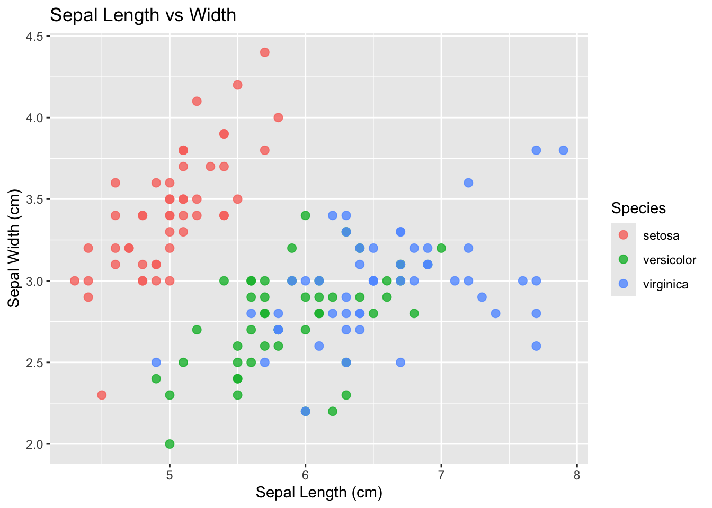
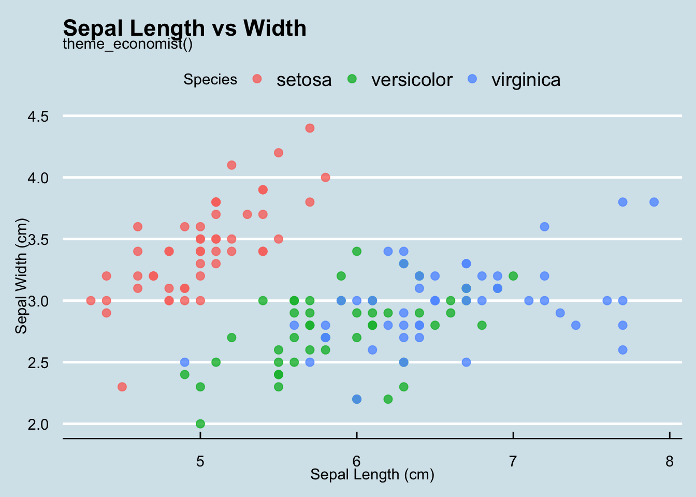
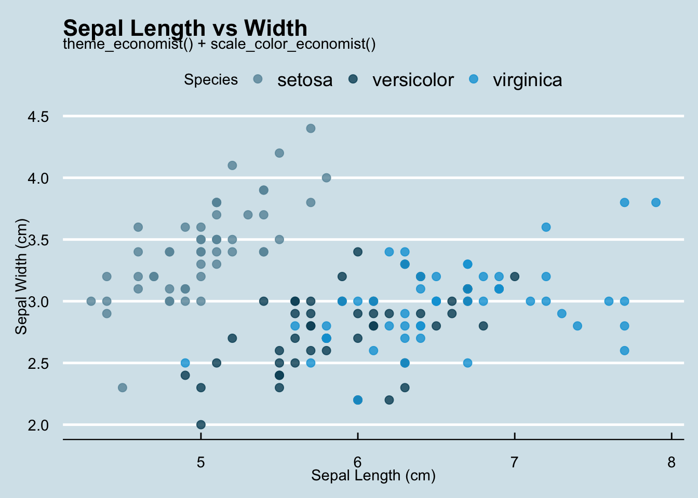
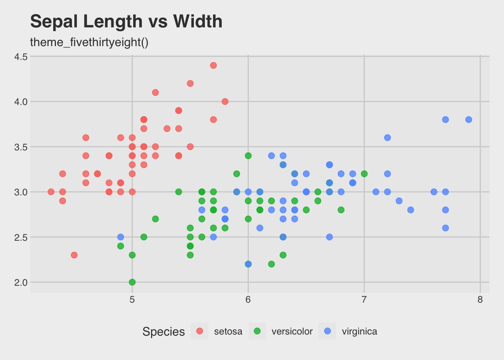
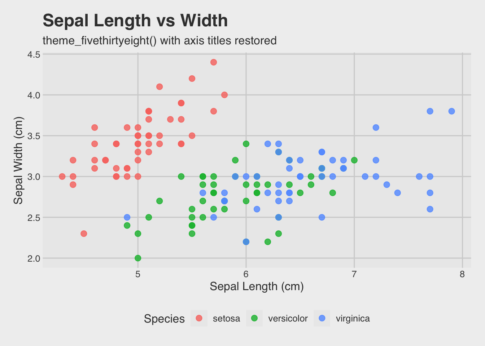
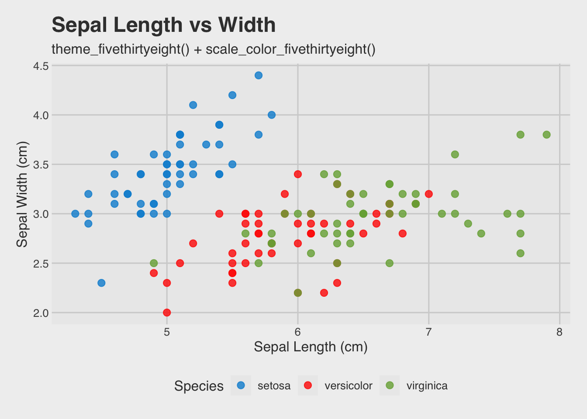
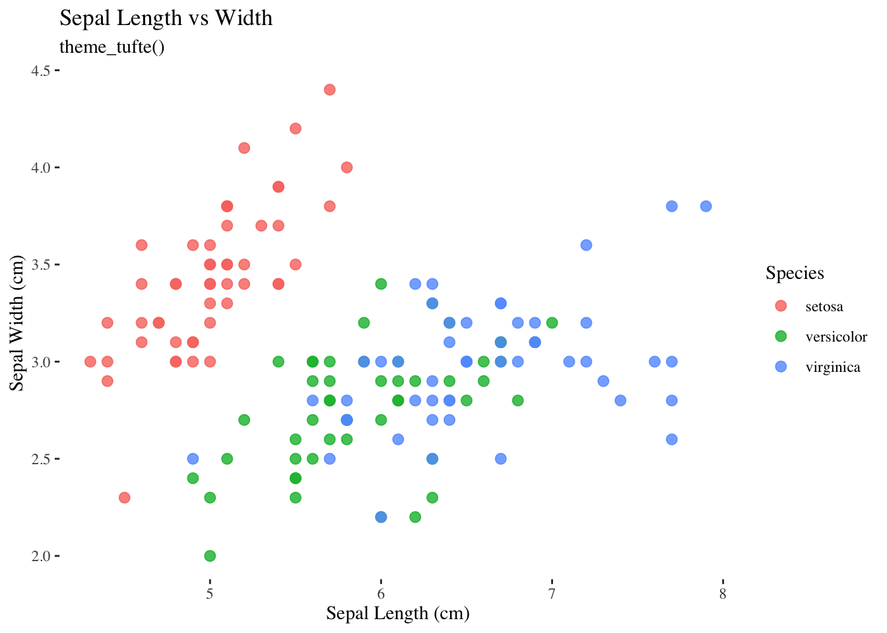
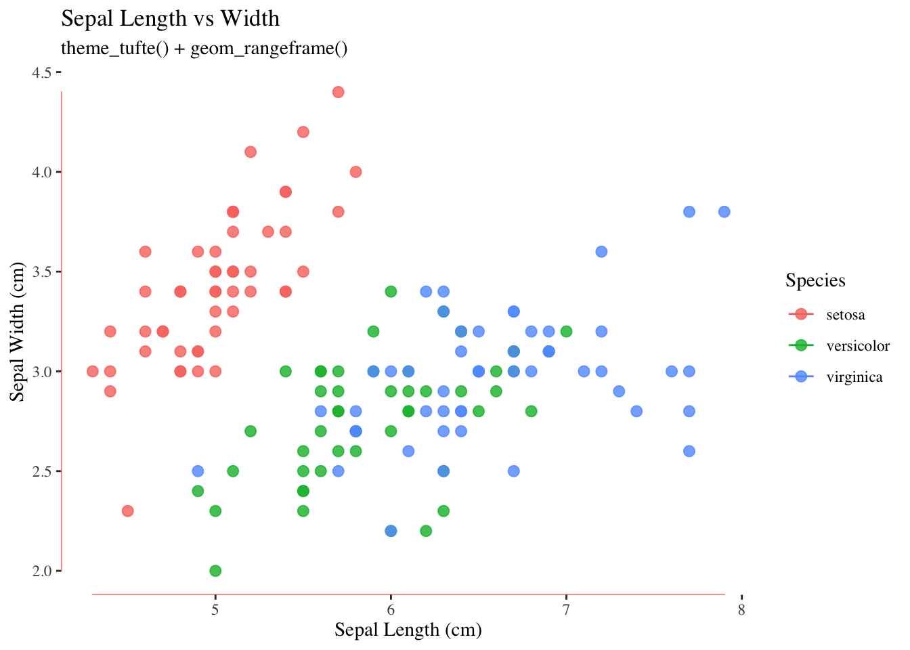

Goal: after completing a series of portfolios, I wanted to step back and explore how to make them prettier.
The dataset used throughout is the built-in iris
dataset. It has 150 flowers across 3 species (setosa,
versicolor, virginica), with measurements for sepal
and petal length and width.
The YAML header is the block at the very top of your
.Rmd file, sitting between two sets of ---
lines. It tells R how to knit the document. Here is what this notebook’s
header looks like:
Each line is an option. Below is what every single one does.
toc stands for Table of Contents.
Setting this to true adds a navigation panel to your
document that lists all your section headings. Without it, there is no
navigation and readers have to scroll through the whole page to find
what they want.
Setting it to false (or just leaving it out) removes the
TOC entirely.
By default, even if you turn the TOC on, it sits at the top of the
page and disappears as soon as you scroll down. Setting
toc_float: true makes it stick to the left side of the
screen so it is always visible no matter how far down the page you
are.
Setting it to false puts the TOC back at the top and
makes it static.
You can also pass extra options to toc_float to control
its behaviour:
toc_float:
collapsed: false # show all sub-sections expanded by default
smooth_scroll: false # jump to sections instead of smooth scrollingBy default collapsed is true, meaning only
top-level headings show until you click them. Setting it to
false shows everything expanded from the start.
This controls how many levels of headings appear in the TOC.
In Markdown, headings are made with # symbols. One
# is the biggest heading, ## is one level
smaller, ### is smaller still, and so on.
toc_depth: 3 means headings at levels #,
##, and ### all show up in the TOC. If you
change it to 2, only # and ##
appear, and ### headings are ignored in the navigation
panel (they still appear in the document, just not in the TOC).
This sets the overall look of the whole HTML page, including fonts, colors, button styles, and spacing. The themes come from a free library called Bootswatch. Changing this one word completely transforms the look of the document.
Try swapping flatly for any of these and
re-knitting to see the difference:
| Theme | What it looks like |
|---|---|
default |
Plain Bootstrap, no frills |
flatly |
Clean, flat, modern. A good all-purpose default |
cerulean |
Blue accents, professional |
journal |
Serif fonts, feels like a magazine |
readable |
Slightly larger fonts, easy on the eyes |
spacelab |
Light and airy with lots of white space |
united |
Orange accents, inspired by Ubuntu |
cosmo |
Clean and rounded, modern feel |
sandstone |
Warm earthy tones |
yeti |
Bold headings, very clean |
darkly |
Dark mode |
cyborg |
Dark background with blue accents |
slate |
Dark grey tones |
superhero |
Dark background with orange accents |
💡 To try a theme, change
theme: flatlyin the YAML header to any name from the table above, then click Knit. The entire page updates instantly.
This only affects one thing: the colours used inside code chunks. It controls how keywords, strings, numbers, and comments are coloured in your code blocks. It has no effect on the rest of the page.
Available highlight styles:
| Style | Feel |
|---|---|
default |
Simple, muted colours |
tango |
Colourful and easy to read. Very popular |
pygments |
Inspired by the Python syntax highlighter |
kate |
From the Kate text editor |
monochrome |
Black and white only, no colours |
espresso |
Dark code background |
zenburn |
Soft dark theme, easy on the eyes |
haddock |
Subtle and muted |
breezedark |
Modern dark style |
textmate |
From the TextMate editor |
💡
highlightonly changes how code looks inside backtick blocks. It does not affect headings, body text, or anything else on the page.
The ggthemes package adds extra themes to ggplot2. These
are themes inspired by real publications and tools. Once the package is
loaded with library(ggthemes), the themes are available
just like theme_minimal() or
theme_classic().
The same base plot is used throughout so the differences are easy to compare. Here is that base plot with no theme applied yet:
ggplot(iris, aes(x = Sepal.Length, y = Sepal.Width, color = Species)) +
geom_point(size = 2.5, alpha = 0.8) +
labs(
title = "Sepal Length vs Width",
x = "Sepal Length (cm)",
y = "Sepal Width (cm)"
)
This is just the default ggplot2 style. Now the same plot is run
through three different ggthemes themes below.
This theme mimics the style used by The Economist magazine. It has a blue-grey background, white grid lines, and a distinctive look that feels very editorial.
ggplot(iris, aes(x = Sepal.Length, y = Sepal.Width, color = Species)) +
geom_point(size = 2.5, alpha = 0.8) +
labs(
title = "Sepal Length vs Width",
subtitle = "theme_economist()",
x = "Sepal Length (cm)",
y = "Sepal Width (cm)"
) +
theme_economist()
The theme changes the background, fonts, and grid but leaves the
default ggplot2 colour palette on the points. To match the colours to
the theme as well, add scale_color_economist():
ggplot(iris, aes(x = Sepal.Length, y = Sepal.Width, color = Species)) +
geom_point(size = 2.5, alpha = 0.8) +
labs(
title = "Sepal Length vs Width",
subtitle = "theme_economist() + scale_color_economist()",
x = "Sepal Length (cm)",
y = "Sepal Width (cm)"
) +
theme_economist() +
scale_color_economist()
scale_color_economist() replaces the default ggplot2
colours with the colour palette used by The Economist. Pairing
a theme with its matching scale makes the whole plot feel
consistent.
This theme is inspired by the data journalism site FiveThirtyEight. It has a grey background, no axis titles by default, and a clean editorial feel.
ggplot(iris, aes(x = Sepal.Length, y = Sepal.Width, color = Species)) +
geom_point(size = 2.5, alpha = 0.8) +
labs(
title = "Sepal Length vs Width",
subtitle = "theme_fivethirtyeight()",
x = "Sepal Length (cm)",
y = "Sepal Width (cm)"
) +
theme_fivethirtyeight()
Notice that the axis labels (x and y) from
labs() do not appear. This is intentional. The
FiveThirtyEight style drops axis titles. To bring them back, add
theme(axis.title = element_text()) after the theme
call:
ggplot(iris, aes(x = Sepal.Length, y = Sepal.Width, color = Species)) +
geom_point(size = 2.5, alpha = 0.8) +
labs(
title = "Sepal Length vs Width",
subtitle = "theme_fivethirtyeight() with axis titles restored",
x = "Sepal Length (cm)",
y = "Sepal Width (cm)"
) +
theme_fivethirtyeight() +
theme(axis.title = element_text())
Adding theme() after
theme_fivethirtyeight() lets you override individual parts
of the theme without replacing the whole thing. Here it turns axis
titles back on. Now with the matching colour scale added too:
ggplot(iris, aes(x = Sepal.Length, y = Sepal.Width, color = Species)) +
geom_point(size = 2.5, alpha = 0.8) +
labs(
title = "Sepal Length vs Width",
subtitle = "theme_fivethirtyeight() + scale_color_fivethirtyeight()",
x = "Sepal Length (cm)",
y = "Sepal Width (cm)"
) +
theme_fivethirtyeight() +
scale_color_fivethirtyeight() +
theme(axis.title = element_text())
This theme is based on the design principles of Edward Tufte, a statistician known for writing about data visualisation. His philosophy is to remove anything that does not add information. The result is a very stripped-back plot with no background, no grid lines, and almost no decoration at all.
ggplot(iris, aes(x = Sepal.Length, y = Sepal.Width, color = Species)) +
geom_point(size = 2.5, alpha = 0.8) +
labs(
title = "Sepal Length vs Width",
subtitle = "theme_tufte()",
x = "Sepal Length (cm)",
y = "Sepal Width (cm)"
) +
theme_tufte()
theme_tufte() removes grid lines and the axis box
entirely, leaving only the axis lines themselves. It can look very plain
at first but it puts all the attention on the data points.
A common pairing with theme_tufte() is
geom_rangeframe(), which draws short axis lines only over
the range of the data instead of running the full length:
ggplot(iris, aes(x = Sepal.Length, y = Sepal.Width, color = Species)) +
geom_point(size = 2.5, alpha = 0.8) +
geom_rangeframe() +
labs(
title = "Sepal Length vs Width",
subtitle = "theme_tufte() + geom_rangeframe()",
x = "Sepal Length (cm)",
y = "Sepal Width (cm)"
) +
theme_tufte()
geom_rangeframe() comes from ggthemes as
well. It adds short tick-style axis lines that only span the range of
the actual data. The combination of theme_tufte() and
geom_rangeframe() is very common when using this theme.
Everything covered so far changes the look of plots or the page theme. CSS goes one step further and lets you control the look of the page itself directly.
CSS stands for Cascading Style Sheets. It is the language that browsers use to decide how things look on a webpage. Since R Markdown knits to HTML, any CSS rules you write get applied to the final document.
You do not need to be a web developer to use CSS in a notebook. A few simple rules can make a big visual difference.
You add a chunk but instead of {r} you write
{css}:
That is all. When you knit, those rules apply to the whole page.
Everything inside /* */ is a comment and does not do
anything, it is just a note to yourself.
Every CSS rule follows the same pattern:
selector {
property: value;
}The selector is what you are targeting (for example
h1 targets all level-1 headings). The
property is what you want to change (for example
color). The value is what to change it to
(for example red or #2c7bb6).
This rule adds a coloured bottom border to all h1
headings and changes the colour of all h2 headings.
/* Style all h1 headings */
h1 {
color: #2c3e50;
border-bottom: 3px solid #2c7bb6;
padding-bottom: 6px;
}
/* Style all h2 headings */
h2 {
color: #2c7bb6;
}What each property does:
color sets the text colour. You can use a colour name
like red or a hex code like #2c7bb6. Hex codes
give you more precise control.border-bottom draws a line under the element. The three
values are the thickness (3px), the line style
(solid), and the colour (#2c7bb6). You could
also write dashed or dotted instead of
solid.padding-bottom adds space between the text and the line
below it. Without this the border sits right against the text.Try changing #2c7bb6 to another hex code or colour name
to see a different result. For example #e74c3c is red,
#27ae60 is green, #8e44ad is purple.
This rule changes the font size and line spacing for the whole page.
/* Change the font size and line spacing for the whole page */
body {
font-size: 15px;
line-height: 1.7;
}What each property does:
font-size sets how big the text is. The default in most
themes is around 14px. Bumping it to 15px or
16px makes the page easier to read.line-height controls the spacing between lines. A value
of 1.7 means each line is 1.7 times the font size tall,
which adds breathing room between lines. The default is usually around
1.5.Try changing font-size to 18px and
line-height to 2.0 to see how spacious the
page feels, then bring it back down.
A callout box is a styled block you can use to highlight tips or
important notes. CSS does not create the box automatically, you have to
attach a class to a <div> tag in your markdown.
First, define the class in CSS:
/* A blue note box */
.note {
background-color: #f0f7ff;
border-left: 5px solid #2c7bb6;
padding: 12px 16px;
margin: 16px 0;
border-radius: 4px;
}
/* A red warning box */
.warning {
background-color: #fff5f5;
border-left: 5px solid #e74c3c;
padding: 12px 16px;
margin: 16px 0;
border-radius: 4px;
}What each property does:
background-color fills the inside of the box with a
colour.border-left draws a thick coloured stripe on the left
edge. The three values are thickness, style, and colour, same as
border-bottom above.padding adds space between the text and the edges of
the box. Writing 12px 16px is shorthand for 12px top and
bottom, 16px left and right.margin adds space outside the box, between the box and
whatever is above or below it. 16px 0 means 16px top and
bottom, 0 left and right.border-radius rounds the corners. A value of
4px is a subtle rounding. Try 12px for rounder
corners or 0 for sharp square corners.Then use the class in your markdown like this:
<div class="note">
💡 This is a note box.
</div>
<div class="warning">
⚠️ This is a warning box.
</div>Which produces these:
💡 This is a note box. Use it to highlight tips or anything you want the reader to pay attention to.
⚠️ This is a warning box. Same structure as the note box, just different colours.
You can also style the appearance of code chunks on the page. In the
knitted HTML, code chunks are wrapped in a <pre> tag.
Targeting pre in CSS lets you change how they look.
/* Style code chunk blocks */
pre {
background-color: #f8f8f8;
border: 1px solid #e0e0e0;
border-radius: 6px;
padding: 12px;
font-size: 13px;
}What each property does:
background-color sets the background of the code block.
#f8f8f8 is a very light grey, which is softer than bright
white.border draws a line around the entire block. The three
values are thickness, style, and colour. 1px solid #e0e0e0
gives a subtle light grey border.border-radius rounds the corners of the block, same as
the callout boxes.padding adds space between the code text and the edges
of the block.font-size controls the size of the text inside code
blocks specifically, without affecting the rest of the page.| Section | Tool | What was explored |
|---|---|---|
| YAML | toc, toc_float,
toc_depth |
Navigation panel options |
| YAML | theme |
Full page visual themes from Bootswatch |
| YAML | highlight |
Code syntax colour styles |
| ggthemes | theme_economist() |
Editorial style with blue-grey background |
| ggthemes | theme_fivethirtyeight() |
Data journalism style, grey background |
| ggthemes | theme_tufte() |
Minimal, data-first, no decoration |
| ggthemes | scale_color_*() |
Matching colour palettes for each theme |
| CSS | headings | Colour and border styling for h1 and
h2 |
| CSS | body | Font size and line height for the whole page |
| CSS | callout boxes | Custom styled blocks using <div class="..."> |
| CSS | code chunks | Background, border, and font size for pre blocks |